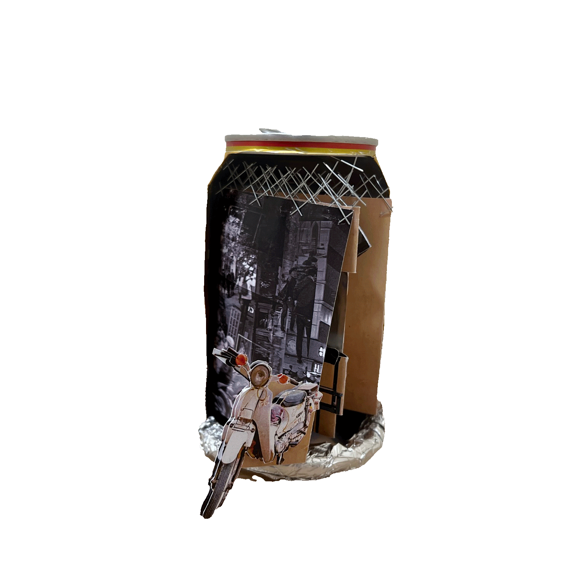

Hanoi and the backstreet-of-everything 2024
Mini Display — Mixed Media
Back in the days, my grandparents once told me a funny quote “Nhà nhà đục tường, người người ra đường” which can roughly be translated to “Everybody breaches their walls as everyone comes into the streets”. Growing up in a close-to-city-center neighborhood in Hanoi, I took it for granted: almost every house on the street would be for commercial purposes. People would use every spare space left to build something and make a living. Sidewalk service varies from sidewalk restaurants, ice tea, and BBQ to sidewalk barbers. But when it comes to sidewalk barbers, it hits me differently. People would eat and drink in a hurry, but we wouldn't do our hair in such a manner. I always encountered sidewalk barbers in such a peaceful and calming context, and I wondered why.
At the front of the street, we have shops, several significant buildings' gates, and all. It might be just an alley at the back, and nothing happens there. But what happens when, at the back, there is another street? People would start using this area, but not by breaching the walls, and that is where sidewalk barbers appear. Moreover, this naturally happens when a large site with an unoccupied backside takes place, such as a school, workplace, or parking lot. The surrounding area seems spacious during midday because there are almost no storefronts. The surrounding area is also pretty quiet during midday because of a school or workplace nearby. All these factors create a fascinating scene: people having their hair cut at a sidewalk barber, completely relaxing and calming during midday on an uncrowded street.

Gradually, other sidewalk services appear, such as an iced tea booth or a BBQ stall. But not once do these backstreets get overcrowded. All these services operate during the daytime, then slowly immersed in the heavy traffic as the sun goes down. On some days, there might be nothing going on. The barber's mirror and the iced tea maker's furnishings might still be left there, and they would come back at any time. The space is reasonably used, but it never grows out of that. I name it “the backstreet corner of everything”.
When I came across the word “The instant mega-city”, I just interpreted it as my grandparents' quote. People are building up things constantly to provide sufficient mobility and service for the increasing population. But some things remained untouched, like the sidewalk barber on the backstreet. There might be an iced tea booth nearby or a BBQ stall. It is a small business, and it never becomes more significant than that, maybe as long as no one breaches the nearby walls.

Course: RMIT University Vietnam — History and Theory of Design 2
Duration: 1 week